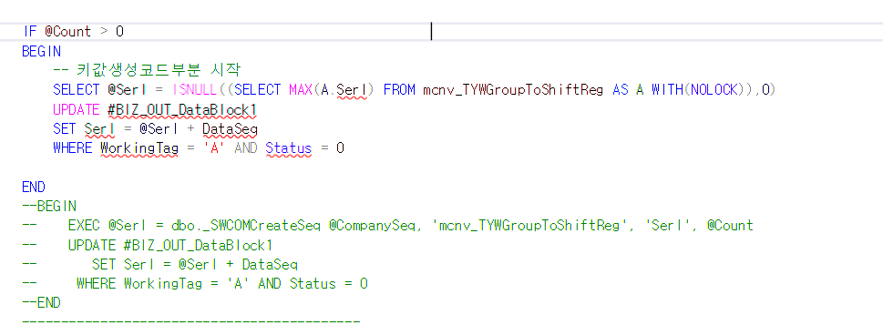

테이블 백업 후 복사 (Serl 자동 채번)
- 백업 테이블 생성 (기존 테이블 삭제)
SELECT * INTO mcnv_TYWGroupCalendar_back FROM mcnv_TYWGroupCalendar
SELECT * INTO mcnv_TYWGroupToShiftReg_back FROM mcnv_TYWGroupToShiftReg
2.
SSPPARAM mcnv_TYWGroupToShiftReg
(테이블 컬럼 확인)
insert into mcnv_TYWGroupCalendar(CompanySeq, Serl, WkGroupSeq, WkDate, DayType, Remark, LastUserSeq, LastDateTime)
SELECT CompanySeq, ROW_NUMBER() OVER(ORDER BY WkGroupSeq, WkDate) Serl, WkGroupSeq, WkDate, DayType, Remark, LastUserSeq, LastDateTime
FROM mcnv_TYWGroupCalendar_back
INSERT INTO mcnv_TYWGroupToShiftReg(CompanySeq, Serl, WkTypeSeq, WkGroupSeq, FrDate, ToDate, Remark, LastUserSeq, LastDateTime)
SELECT CompanySeq, ROW_NUMBER() OVER(ORDER BY WkTypeSeq, WkGroupSeq, FrDate) Serl, WkTypeSeq, WkGroupSeq, FrDate, ToDate, Remark, LastUserSeq, LastDateTime
FROM mcnv_TYWGroupToShiftReg_back
SELECT * from _TCOMCreateSeqMax WHERE TableName = 'mcnv_TYWGroupCalendar'
=> Common 에서 확인

이 방식으로 했기 때문에 따로 건들게 없었음